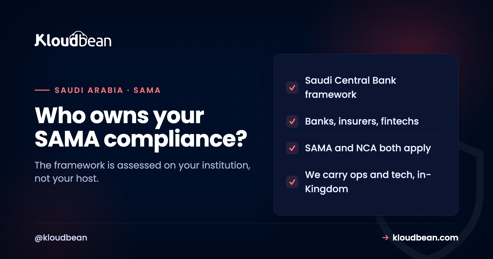

SAMA Cyber Security Framework: What It Means for Where You Host

If you run a bank, an insurer, a financing company, a payment provider, or a fintech regulated in Saudi Arabia, the SAMA Cyber Security Framework is not optional reading. It is the security bar your regulator holds you to, and a real part of it is decided by where and how your systems are hosted. The framework is broad and the language is dense, but the hosting implications are more concrete than they first look. This guide explains what the framework is, how it sits alongside the NCA controls that also apply to you, and, honestly, which parts a managed cloud can carry and which stay yours.
It is the cybersecurity framework issued by the Saudi Central Bank (still widely called SAMA), and it is mandatory for the financial institutions it regulates: banks, insurers, financing and credit companies, and payment firms, referred to as member organisations. It sets requirements across governance, risk and compliance, operations and technology, and third-party security, and it measures you against a maturity model rather than a simple pass or fail. Hosting matters because the operations-and-technology controls (network isolation, encryption, logging, backups, access control, patching) and data residency are things a managed cloud can align with, while the governance and the formal assessment stay with your organisation.
What the SAMA CSF actually is
Start with the plain description, because "SAMA compliance" gets used loosely and the specifics matter to a regulator.
The SAMA Cyber Security Framework is issued by the Saudi Central Bank, the Kingdom's central bank and financial-sector regulator (the acronym SAMA, from its former name, is still in common use). Its purpose is to raise and standardise the cybersecurity maturity of the Saudi financial sector, so that banks and the firms around them can withstand and recover from cyber incidents. It is a published framework, and it draws on established international standards, so much of it will feel familiar if you have worked with ISO 27001, NIST, or PCI DSS. Two features shape how you are judged against it. First, it organises its requirements into domains, broadly covering cybersecurity leadership and governance, risk management and compliance, operations and technology, and third-party security. Second, it uses a maturity model: you are assessed on how mature each control is, with an expected target level, rather than a binary compliant-or-not. Because the Central Bank maintains and updates it, treat the exact version as something to confirm on the regulator's current guidance rather than a fixed number to memorise.
Who it applies to
This is short, but worth being precise about, because it decides whether the framework is your problem at all.
The framework applies to the financial institutions the Saudi Central Bank regulates, its member organisations. In practice that means the banks, the insurance and reinsurance companies, the financing and credit companies, the credit bureaus, and the payment and fintech firms operating under its supervision. If you are one of those, or you are a technology company selling into them, the SAMA CSF is in scope for you, directly or through the contracts your financial-sector customers must impose on their suppliers. If you are a general SaaS with no financial-sector footprint, it is not your framework, though the NCA controls may still be. The quickest way to know: if the Saudi Central Bank regulates you, or your customer is regulated by it and is pushing requirements down to you, the SAMA CSF applies.
SAMA and the NCA: two frameworks, both in play
Here is the point that confuses people most, and getting it straight saves a lot of wasted effort.
A financial institution in Saudi Arabia does not choose between SAMA and the NCA. It falls under both. The Saudi Central Bank sets the SAMA CSF for the financial sector it regulates, and the National Cybersecurity Authority sets the national frameworks (the Essential Cybersecurity Controls, and the Critical Systems Cybersecurity Controls for critical systems) that apply across the Kingdom. A bank's core systems can be critical systems under the NCA's CSCC and subject to the SAMA CSF at the same time. The frameworks overlap heavily in substance, encryption, access control, logging, resilience, because good security is good security, but they are issued by different authorities, assessed separately, and you are answerable to each. So the practical stance is not "which one," it is "both, and where they overlap I build the control once and map it to each." Treating them as one blurred thing is how requirements get missed.
How the SAMA CSF maps to hosting
The framework is much bigger than infrastructure, but a meaningful slice of it is infrastructure, and that slice is where a host earns its place.
The operations-and-technology part of the framework describes the technical controls that a hosting layer directly touches: segregated and protected networks, encryption of data in transit and at rest, centralised and protected logging, tested backups and the ability to recover, controlled and monitored privileged access, timely patching, and protection against attacks like DDoS. Those are infrastructure controls, and a managed cloud can implement and maintain them and produce the evidence that they are in place. Alongside them sits data residency: financial data carries strong expectations about staying in the Kingdom, which is a hosting decision at heart, and one that running in-Kingdom on Google Cloud's Dammam region answers cleanly. What a host cannot touch is the rest of the framework: the governance, the risk-management programme, the policies, the training, and the formal engagement with the regulator. So the honest split is that hosting can carry the operations-and-technology controls and the residency, and that is a substantial, real contribution, but it is one domain of several.
Concretely, that is the shape of a managed enterprise engagement rather than a self-serve plan. On a dedicated cloud account, Kloudbean builds and maintains those controls in the Dammam region: network segregation, encryption in transit and at rest, privileged access through VPN and a bastion with MFA, centralised logging, and tested restores. None of that arrives as a toggle on an $8 server, and any provider implying otherwise is describing something else.
The third-party angle: your host is something you must assess
There is a twist specific to financial regulation that is worth calling out, because it changes how you should read any "SAMA-compliant hosting" claim.
The SAMA CSF has a whole domain about third-party cybersecurity, which means that when you use a cloud provider, that provider is a third party you are required to assess and manage the risk of. This flips the usual framing. It is not that a provider hands you compliance; it is that you must be able to show you evaluated the provider and that it meets your control requirements. That is actually where a managed provider helps most: if it already implements the operations-and-technology controls, hosts in-Kingdom, and can give you documented evidence, your third-party assessment of it is far easier to complete than assessing a raw, self-managed setup. Read "SAMA-compliant hosting" in that light. The useful question is not "does this make me compliant," it is "does this provider give me controls and evidence that make my own assessment and my own compliance easier." That is a claim a host can honestly support.
Which is why the format of the evidence matters as much as the controls. On managed engagements Kloudbean administers infrastructure access on your behalf and delivers configuration and control evidence as managed reports and documents, so what lands in your assessment file is a document your risk team can file, not a screenshot someone took from a console. Where you need detection and monitoring operations on top, that sits as a collaborative engagement scoped with you, not an off-the-shelf inclusion.
What these controls cost if you leave them until after go-live
Nearly every control above is close to free on day zero and painful to bolt on later. Before you pick a region and ship, read the retrofit price list, because this is where compliance budgets actually go.
- Residency decided late. Moving a live financial workload into the Kingdom after launch is a data migration with a cutover window, plus re-testing every integration, plus re-issuing evidence you already produced against the old location. Chosen at provisioning time it is a region selection: Dammam, before anything is deployed.
- Retention started late. Log retention only counts forward. If your policy or your assessor expects eighteen months of logs and centralised logging went on last quarter, nothing you buy today creates the missing months. That gap sits in your file until time fills it.
- Encryption and key custody added late. Encrypting an empty disk is a configuration line. Encrypting a populated database, or moving to customer-managed keys once real data is in place, is a migration with a maintenance window and a full re-test.
- Access architecture retrofitted. Pulling public SSH out of a running estate and putting VPN, a bastion, and MFA in front of it changes how every engineer and every pipeline reaches production. Built that way from the start, it costs a conversation.
- Recovery testing deferred. The first restore test always finds the broken assumption. Quarterly from day one, it is routine. Discovered during an incident, it is the most expensive version of the same lesson.
Then there is the part nobody can price down for you. No host makes a financial institution compliant, ours included. Kloudbean is not SAMA-certified, and neither is any hosting provider, because the framework is assessed against the member organisation. Your governance, your risk programme and register, your policies and training, your application-layer masking and data classification, the penetration tests you commission, and the formal engagement with the regulator stay exactly where the framework puts them: with you.
What the infrastructure half buys is that the technical controls and their evidence are already built, maintained, and documented in-Kingdom, so your assessment work becomes mapping and attesting instead of constructing from scratch. In a regulated financial context, a provider precise about that line is worth more than one promising to make you compliant. The second claim is the one that falls apart in an assessment.
Related reading
Financial institutions in the Kingdom also fall under the NCA frameworks: start with the NCA CSCC guide for critical systems and NCA ECC compliant hosting for the baseline. For the personal-data side, PDPL compliant hosting. The residency question runs through data residency in Saudi Arabia and the GCP Dammam region guide, and the managed-database angle is in managed databases with Saudi data sovereignty.
Build the infrastructure half your SAMA assessment needs.
On managed engagements Kloudbean delivers the operations-and-technology controls the framework describes, in-Kingdom on the Dammam region, with evidence as managed reports that feed your own assessment. Start the conversation at kloudbean.com, and see the wider picture in cloud hosting in Saudi Arabia.
Operations-and-technology controls · In-Kingdom Dammam region · Evidence as managed reports · Governance stays yours
FAQ
What is the SAMA Cyber Security Framework?
It is the cybersecurity framework issued by the Saudi Central Bank, still widely referred to as SAMA, to raise the cybersecurity maturity of the Kingdom's financial sector. It is mandatory for the financial institutions the Central Bank regulates and sets requirements across governance, risk and compliance, operations and technology, and third-party security. It uses a maturity model, assessing how mature each control is against an expected target level rather than a simple pass or fail.
Who must comply with the SAMA CSF?
The financial institutions regulated by the Saudi Central Bank, known as member organisations: banks, insurance and reinsurance companies, financing and credit companies, credit bureaus, and payment and fintech firms under its supervision. Technology suppliers to those institutions are also drawn in through the contractual requirements their financial-sector customers must impose. A general business with no financial-sector footprint is not in scope, though it may still fall under the NCA's national controls.
Is SAMA the same as the NCA?
No. SAMA is the Saudi Central Bank, regulating the financial sector, and it issues the SAMA Cyber Security Framework. The NCA is the National Cybersecurity Authority, issuing national frameworks like the Essential and Critical Systems Cybersecurity Controls that apply across the Kingdom. A Saudi financial institution falls under both at once, so it must satisfy the SAMA CSF and the relevant NCA controls, building overlapping controls once and mapping them to each framework.
Can hosting make me SAMA compliant?
No. Compliance is assessed against your whole organisation, including governance, risk management, policies, and people, which no hosting provider can supply. What a managed cloud can do is implement and maintain the operations-and-technology controls, encryption, network isolation, logging, backups, access control, patching, host in-Kingdom, and give you documented evidence. That is a substantial contribution to one domain of the framework, but the compliance itself, and the formal engagement with the regulator, remain yours.
How does the SAMA CSF affect where I host financial data?
Financial data carries strong expectations about remaining in the Kingdom, which makes residency a hosting decision. Running in-Kingdom, for example on Google Cloud's Dammam region, keeps the data on Saudi soil and answers the residency expectation directly. Beyond location, the framework's operations-and-technology controls shape how the hosting must be configured, with isolation, encryption, logging, and tested recovery, so both where and how you host are in scope.
What is the third-party requirement in the SAMA CSF?
The framework includes a domain on third-party cybersecurity, which means a cloud provider you use is a third party whose risk you must assess and manage. Rather than a provider granting you compliance, you have to demonstrate you evaluated it and that it meets your control requirements. A managed provider that already implements the technical controls, hosts in-Kingdom, and supplies documented evidence makes that assessment considerably easier to complete than a raw self-managed environment would.
Does the SAMA CSF use a maturity model?
Yes. Rather than a binary compliant-or-not judgement, it assesses how mature each control is, typically on a scale, with an expected target maturity that member organisations are meant to reach and sustain. This means improvement is measured over time and gaps are expressed as maturity shortfalls rather than simple failures. It also means evidence matters: you need to show a control is not just present but operating at the expected level.
Is Kloudbean SAMA certified?
No, and be cautious of any provider that claims to be, because SAMA compliance is assessed against the financial institution, not its hosting provider. Kloudbean's role is to deliver the infrastructure-layer controls the framework describes, host in-Kingdom on the Dammam region, and provide evidence as managed reports that support your own assessment and control mapping. The governance, risk programme, and formal regulatory engagement stay with your organisation, where the framework places them.